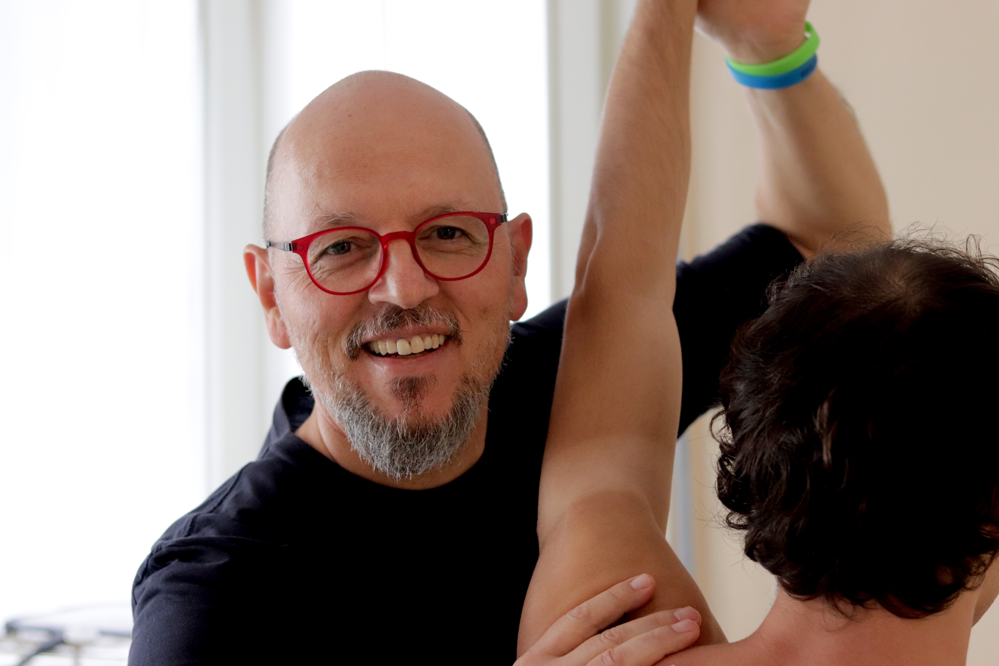

Chi sono
Ho iniziato la mia carriera nel 1987 all'Ospedale Maggiore Policlinico di Milano. Dopo anni di duro lavoro, ma ricco di soddisfazioni sul piano umano e professionale, nel 1991 ho conseguito la qualifica di fisioterapista massaggiatore presso l'Istituto Ortopedico "G. Pini" di Milano e ho proseguito la mia attività presso l'Ospedale Sant'Anna di Como.
Il 1992 è stato un anno importante, durante il quale ho potuto mettere a frutto le mie nuove conoscenze e vedere con i miei occhi i miglioramenti dei pazienti, trattati con metodi dolci e poco invasivi. Risultati che suscitarono grande interesse anche nell'ambiente sportivo, tanto che poco dopo accettai la proposta della Mediolanum Rugby di diventare il massaggiatore ufficiale per la stagione 1993-1994.
L'adrenalina dell'ambiente sportivo non mi dava però il
calore
del contatto
umano, e
la
soddisfazione di
poter offrire
un aiuto concreto a persone con handicap e traumi fisici anche gravi.
Per questo nel 1997 ho deciso di dare il mio contributo come dipendente
della
fondazione Don
Gnocchi di
Milano, dove
sono rimasto fino al 2000, anno di apertura del mio studio privato: Ellesei
Fisioterapia,
centro di
riabilitazione e
massaggio autorizzato Human Tecar®.
Mettersi in proprio per me è stata una vera sfida, vinta grazie al sostegno dei miei clienti e l'affiancamento a eminenti professionisti. Il continuo aggiornamento professionale sulle nuove terapie di riabilitazione e cura di traumi e cicatrici post operatorie, mi ha permesso di lavorare serenamente negli anni, ampliando la gamma di terapie e servizi rivolti ai clienti.
Ho sempre affrontato il mio lavoro con grande passione e posso dire di aver risolto piccoli e grandi problemi che altri medici avevano classificato come irrecuperabili. Questo grazie alla serietà nell'uso di tecniche e macchine all'avanguardia, ma soprattutto grazie all'ascolto delle esigenze dei pazienti e delle loro storie personali. Questo per me significa essere un bravo fisioterapista.
